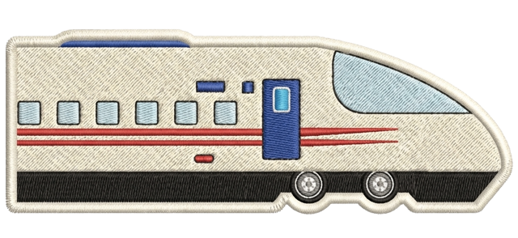

bureau des projets
le site perso de Jordan Mrt.

Hello World!
le 12 août 2026
Hello World.
Ceci est le tout premier "article" du blog. Il n'est, je pense, pas là pour raconter quelque chose, mais plutôt pour vérifier que ça fonctionne et que j'ai mis les fichiers au bon endroit dans mon système.
C'est un peu étrange d'écrire un article directement dans l'éditeur, et potentiellement que je vais faire plusieurs modifications pour arriver à avoir un style et un affichage comme je le souhaite (parce que je ne suis qu'un codeur du dimanche).

Est-ce que l'image que j'ai ajouté juste au dessus s'est affichée ? Je ne sais pas, je n'ai pas encore regardé dans le rendu Live Server de VS Code. Je vais mettre un petit compteur en bas de cet article et je te dirais combien de fois j'ai dû repasser pour avoir un résultat correct.
Compteur d'édition : 4
par Jordan Mrt